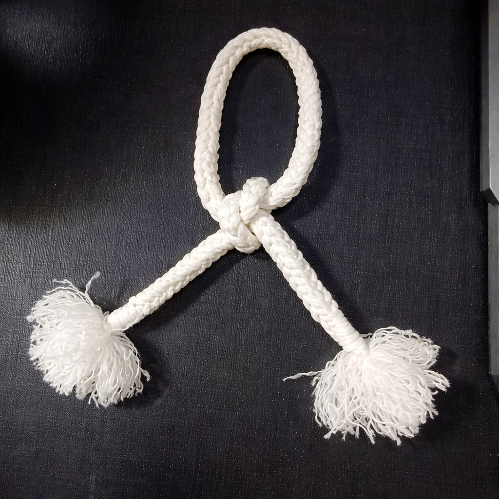
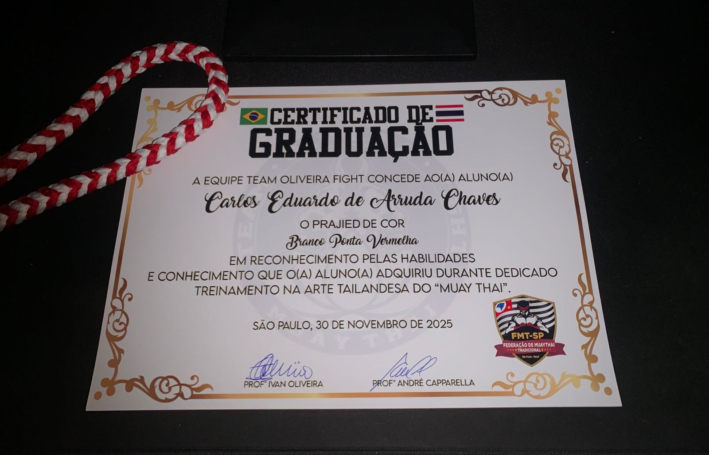
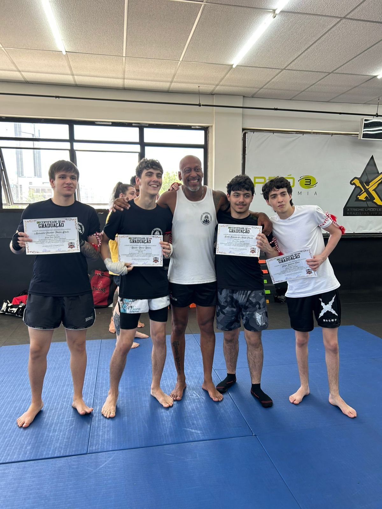

Me chamo Carlos Eduardo de Arruda Chaves, e eu tive o primeiro contato com o Muay Thai na metade de 2023 (quando eu tinha 15 anos), um de meus colegas da escola conheceu uma academia que ensinava Muay Thai, logo depois de 1 ou 2 mês que começou a treinar, ele chamou eu e um amigo para começarmos juntos. Após um tempo de treino, eu havia "desanimado" por algum motivo, e acabei ficando um período de 1 mês sem ir treinar, mas durante esse tempo que fiquei sem ir, era como se algo tocasse na minha mente falando que eu não deveria abandonar a luta, nisso, não deu nem 2 meses desde que tinha ido a última vez, eu voltei a lutar denovo, e desde então, eu não parei de treinar mais Muay Thai, mesmo morando a mais de 25 minutos de carro da academia, para mim, isso não é mais um obstáculo. Sempre que não posso ir aos treinos, fico chateado, e atualmente, é um dos meus hábitos que pretendo nunca deixar de praticar, o Muay Thai me ensinou muito além de defesa pessoal, me ensinou valores e quão profundos eles são, postura diante dificuldades, resiliência, disciplina e autocontrole em momentos difíceis, humildade, coragem, e respeito com tudo na vida.
O Muay Thai transformou a forma de como eu lido e resolvo diversas dificuldades em minha vida, a palavra "luta", para mim, é algo muito além do que enfrentar uma troca e defesa de golpes, luta agora se aplica para tudo na vida, momentos difíceis, algum problema que deve ser resolvido, situações que colocam em prática tudo o que eu aprendi com o Muay Thai, e a frase que eu repito sempre que comento sobre Muay Thai com os outros é "Muay Thai é luta, não briga", pois você deve colocar todos os valores aprendidos em prática, e aplicando isso não somente ao momento de uma luta no tatame, mas para todas as situações da vida que exigem garra
Minha primeira graduação no Muay Thai foi no dia 01/12/2025 e esse dia foi muito especial, pois mostrou que finalmente eu estava pronto para seguir em frente e abrir caminhos maiores na arte do Muay Thai, e demonstrou que no final de tudo, o esforço vale a pena. Nesse dia, eu e meus amigos nos graduamos, e foi muito bom ver que nós começamos juntos, sem nem saber fazer uma base direito, e estavamos naquele momento quebrando barreiras.


Atualmente, eu só tenho a agradecer por tudo que o Muay Thai me ensinou, agradeço pelos momentos bons, e pelo o que aprendi nos momentos de dificuldade, sei que ainda tenho muito a aprender e estou ansioso por isso, espero crescer cada vez mais, e que barreiras sejam quebradas a cada luta.